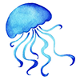
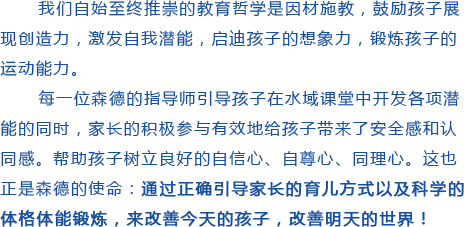
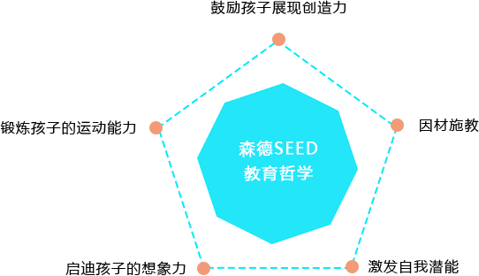
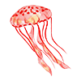
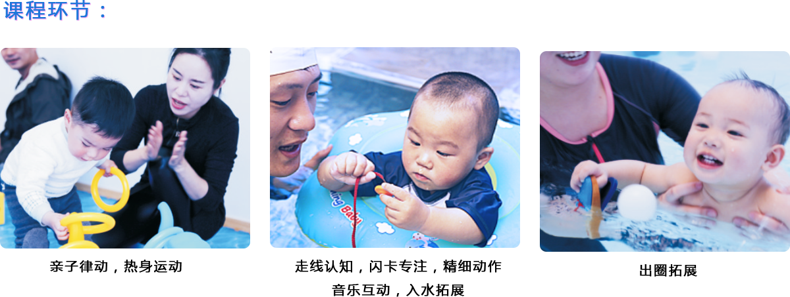
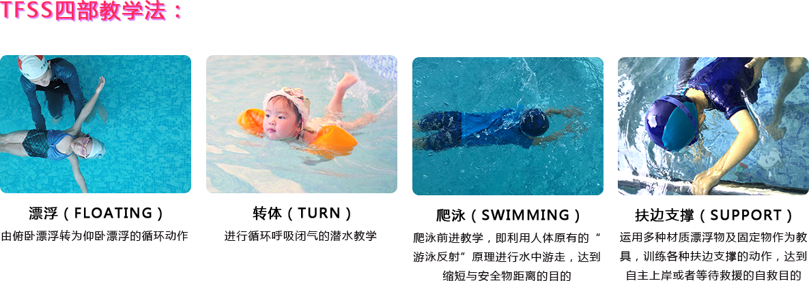

森德SEED教育哲学



森德SEED课程三大体系
水中早教
水中技能
水中自救
水中早教
0-6月
7-30月
3.5-3岁
3-4岁
5-7岁
致力于0-6岁的婴幼儿提供自救漂浮，潜水技巧，游泳技术等能力的提升。同时根据婴幼儿年龄特征提出了空中体能，陆地互动及水中技巧三结合的水育3D全景教学理念。

水中技能
0-6月
7-30月
3.5-3岁
3-4岁
5-7岁
致力于0-6岁的婴幼儿提供自救漂浮，潜水技巧，游泳技术等能力的提升。同时根据婴幼儿年龄特征提出了空中体能，陆地互动及水中技巧三结合的水育3D全景教学理念。
-
小海星班，0-6M
仰卧漂浮，俯卧漂浮，面部触水，被动潜水
刚出生脐带结痂愈合后15天左右至6个月的宝宝就可以成为森德水域基础课最小的学生！在指导师的陪护下让宝宝体验在水中的感觉。经过适应降低宝宝对水的恐惧感、提高宝宝对水的敏感度。 -
小海马班，6-12M
浮袖行走，辅助浮袖漂浮，被动闭气，入水拓展
让宝宝逐步适应水带来的阻力、漂浮和失重的感觉。学习通过口令控制呼吸并逐步体验在水中本能的条件反射.在适应水的同时综合早教音乐、陆地运动、水中游戏等方面内容，让宝宝收获体能、智能和心理的全面发展。 -
小海狮班，12-18M
浮袖打腿，俯卧漂浮，仰卧漂浮，呼吸练习 （口吸口呼）
当宝宝熟悉了在水中的基本动作后，就可以学习更有技巧的专业游泳动作了。如：浮潜、仰泳、踢腿换气等，这个时候宝宝会更好的配合教练的指令进行有目的训练。学会减缓阻力和运用浮力推动自己，在水中随着水的特性尽情玩耍。 -
小海豹班，30-36M
浮袖闭气打腿，辅助自主打腿，辅助转体练习 （仰卧-俯卧，呼吸练习（口吸鼻呼）
基础泳姿分解训练：强化宝宝记忆动作。强调姿势正确带来的推进力，减缓阻力。 -
小海豚，42-48M
浮板打腿练习，自由泳手臂练习，转体练习 （俯卧-仰卧），自由泳换气练习
强调自由泳各项技能的基础训练，指导师利用上百种水中游戏，根据孩子"玩不够"的特性，用游戏贯穿整个活动，锻炼有氧耐力、增强体质、让孩子拥有自救能力，实现体能储备。 -
小鲨鱼班，48M以上
自由泳组合练习，仰泳打腿练习，自救练习， 仰泳手臂练习
专业泳姿技能训练（20米自由泳）。 -
小海星班，0-6M
仰卧漂浮，俯卧漂浮，面部触水，被动潜水
刚出生脐带结痂愈合后15天左右至6个月的宝宝就可以成为森德水域基础课最小的学生！在指导师的陪护下让宝宝体验在水中的感觉。经过适应降低宝宝对水的恐惧感、提高宝宝对水的敏感度。 -
小鲸鱼班，5-6岁
自由泳组合练习，仰泳组合练习，自救练习， 蝶泳过度练习
自由泳巩固练习（50米自由泳训练）
水中自救
0-6月
7-30月
3.5-3岁
3-4岁
5-7岁
致力于0-6岁的婴幼儿提供自救漂浮，潜水技巧，游泳技术等能力的提升。同时根据婴幼儿年龄特征提出了空中体能，陆地互动及水中技巧三结合的水育3D全景教学理念。
